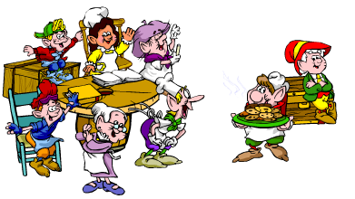

Comment:
Doug, you make no mention of
fruits or vegetables in your book. You do not even speak of the obvious health
benefits of organic grown produce. These omissions -- in what is supposed to
be a Wellness planner -- reduce your book to pure garbage IMHO.
Response: sorry to burts you bubble but you infomation is 132%
incorrectg. first of all in chapter 3 i mention HOW TO FRY TOMATO so maybe you
should read closer between the line so you donet look like idolt? as for you
other stupid remark i do not even know where to begin?
MYTH (FROM IDIOT LIKE YOU): foord is "grown"
TRUE (120% I AM NOT THRE FATHER): contaray to popular belief food does
not grow. how is possible ? simple. you plant seed >> keebler elf take
seed and grind into nutmeg. they then return to crime scene after arbitraty
month number (ie. 5 month fo tomatoe, 3 month fo cucumber) and they plant
vegetables there. if you wonder where they get fruit from it is from magical
keebler well with endless fruit supply (it linked to center of the earth wheres
the mole people wish ther fruit into existance ands give the fruit in well
bucket in exchnage for nutmeg powder (mole people food))
